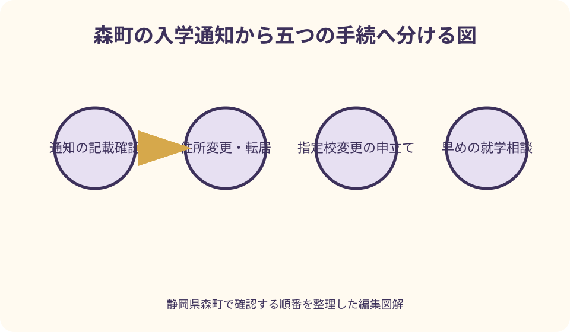
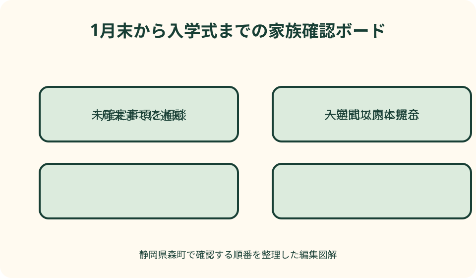

学校・就学・家庭記録｜最終確認 2026-08-10
静岡県森町の小学校入学通知｜届かない・転居・指定校の確認手順
森町の小学校入学通知書は、学校用品を買い始める合図だけではありません。子どもの住所に基づく就学事務、指定された学校、入学期日を確認する行政文書です。通知の確認、転居の連絡、指定校の相談、子どもに必要な支援は、それぞれ窓口と判断が異なるため分けて進めます。

編集イラスト結論：通知・住所・指定校・相談を別の欄で管理する
入学通知書が届いたら、まず封筒と全書類を一緒に保管し、子どもの氏名、住所、入学期日、指定された学校など、印字された項目を一行ずつ確認します。読めない欄や事実と異なる欄は書き直さず、学校教育課へ確認します。
森町の案内では、新入学児童の保護者へ1月末日までに入学通知書を送り、入学式当日の受付で提示します。通知の到着と、学校が別途案内する説明会、用品、提出物は同じ締切とは限りません。
住所の変更予定、指定校についての事情、私立・区域外の学校への就学、発達・健康・生活面の相談は、通知が届いてから一つの回答で済ませる事項ではありません。事実と希望、まだ決まっていない予定を分けて伝えます。
この記事は個別家庭の指定校、指定変更、区域外就学、支援内容を決定しません。最終的な手続と期限は森町教育委員会の案内を確認し、学校の評判や優劣ではなく、子どもの状況と公表基準に沿って相談します。
森町の入学通知書は1月末日までが目安
森町公式の『入学』ページは、小・中学校の新入学児童生徒の保護者へ1月末日までに入学通知書を送付すると案内しています。郵便が届く日には差があるため、1月中旬の時点で未着でも直ちに異常とは限りません。
文部科学省は、市町村教育委員会が翌学年の初めから2か月前までに、入学期日を保護者へ通知すると説明しています。森町の1月末という案内は、この就学事務の地域での具体的な取扱いです。
1月末を過ぎても届かない場合は、近隣家庭の到着状況だけで判断せず、学校教育課へ子どもの氏名、生年月日、住民登録上の住所、転入・転居予定、現在通う園など必要事項を伝えます。
集合住宅では部屋番号、転送届、表札、郵便受けの氏名が影響する場合もありますが、未着の原因を推測して待ち続けないことが大切です。再送や受取方法は学校教育課の指示を受けます。
封筒を開けた日に確認する七項目
確認表には、①子どもの氏名、②生年月日、③住所、④保護者名、⑤指定校、⑥入学期日、⑦通知番号や問い合わせ先など、実際に記載された項目を転記します。ない項目を想像で補う必要はありません。
旧字体、外字、通称、外国語表記など氏名の表示に確認が必要なら、本人確認書類を勝手に学校へ複製送付せず、学校教育課へ必要な確認資料と安全な提出方法を尋ねます。
住所は、今住んでいる場所、住民登録上の住所、入学時点の予定住所を分けます。新築、賃貸契約、同居予定があっても、住民登録の変更前後で就学事務の扱いがどうなるかを確認します。
指定校の名称だけでなく、入学式の日時・会場を通知書と学校の最新案内で照合します。日付を家族カレンダーへ転記するときは、受付開始、式開始、提出物の時刻を混ぜないよう原本も残します。
入学通知と就学時健康診断は別の通知として扱う
森町は、翌春に小学校へ入学予定の子どもを対象に、就学時健康診断を10月・11月に実施し、該当する保護者へ通知すると案内しています。入学通知書が届く1月とは時期も目的も異なります。
健康診断の通知を受け取った、受診したという事実だけで、入学通知書の到着確認は終わりません。反対に、健康診断の案内が見当たらないまま入学通知書を待つことも避け、学校教育課へ状況を伝えます。
転居、体調不良、他自治体での受診など個別事情がある場合、受診の要否や代替日を家庭だけで決めません。現在の自治体と転居先教育委員会へ、どこで何を済ませたかを説明します。
健康診断結果は子どもの健康に関する情報です。近隣や保護者グループへ共有するのではなく、提出先、保管方法、学校へ伝える範囲を、公式の案内と医療機関の説明に沿って扱います。
住所から指定校が決まる基本を理解する
文部科学省によると、市町村に小学校などが2校以上ある場合、教育委員会は入学通知で就学すべき学校を指定します。多くの自治体は、あらかじめ設定した通学区域を基に指定しています。
森町は、森町立小中学校児童生徒の通学学校指定規則により就学すべき学校を指定すると説明しています。保護者が地図上で最も近い学校を選ぶ仕組みとは限らないため、通知書の学校名を基準にします。
森町公式の学校一覧では、現在、町立小学校として森小学校、宮園小学校、飯田小学校が掲載されています。この一覧は所在地と連絡先を知る資料であり、住所ごとの指定校を独自に判定する表ではありません。
不動産広告、園の友人、兄姉が以前通った学校、地図アプリの徒歩距離は、現在の指定を確定する根拠にしません。同じ町名や境界付近で迷う場合も、学校教育課へ正確な住所を伝えます。
指定校の変更は申立てと公表基準で相談する
森町は、基準を設けて指定校の変更申立てを受け付けており、詳しくは学校教育課へ相談するよう案内しています。通知と違う学校を希望するだけで、自動的に変更されるわけではありません。
文部科学省も、保護者の申立てがあり、市町村教育委員会が相当と認めるときは、市町村内の他校へ指定を変更できると説明しています。認められる事由と手続は各教育委員会が定め、公表します。
相談では、『A校の方が良い』『B校は不安』という評価ではなく、転居時期、兄弟姉妹、身体・健康、通学、家庭事情など、基準に関係する事実を日付とともに伝えます。必要書類は担当から案内を受けます。
申立て中でも、元の指定が消えたと自己判断しません。決定通知を受けるまで、どの学校の説明会へ参加するか、用品購入や提出物をどうするかを学校教育課へ確認します。

森町へ転入する予定がある家庭の順序
森町公式は、転入時に森町役場住民生活課窓口で転入手続を行い、その後に教育委員会へ行き、発行された転入通知書を指定された学校へ提出する流れを案内しています。
入学前の転入では、引越日、住民登録日、現在の自治体から受け取った就学関係書類、森町での住所、入学式前後の予定を、両自治体の教育委員会へ早めに伝えます。
住宅契約が済んでいても転入日が未定、建物完成が遅れている、家族の一部だけ先に移る場合は、確定事項と予定を分けます。住所を実際より早く移した前提で学校用品を注文しません。
転入通知書、入学通知書、在籍や転学に関する書類は名称と提出先が異なり得ます。受け取ったら、原本・写しの指定、提出日、担当者、次の連絡を一覧にします。
町内転居・町外転出は決まる前から相談できる
入学前後に森町内で住所が変わると、指定校に関係する場合があります。引越しが決まってからだけでなく、候補日と候補住所の段階で、いつ何を届けるべきか学校教育課へ相談します。
町外へ転出する場合は、森町で届いた入学通知書をそのまま転出先の学校へ持参すれば完了とは限りません。森町と転出先の教育委員会へ連絡し、それぞれの住民異動と就学手続を確認します。
引越し後も現在の指定校へ通いたい、入学後すぐ転居するなどの場合は、指定校変更や区域外就学が関係する可能性があります。希望だけで通学を開始せず、教育委員会間の手続と承認を確認します。
転居日が入学式直前なら、通知書の再発行、入学式の受付、教科書や用品、学校からの連絡先を誰が調整するかを決めます。学校と教育委員会の双方へ同じ内容を伝えた記録を残します。
私立校・町外校などを予定する場合
私立学校や国立学校、住所地以外の市町村立学校などへ進む予定でも、森町から届いた通知を放置しません。入学予定先、承諾書類、森町教育委員会への届出について、学校教育課へ確認します。
文部科学省は、住所地の市町村が設置する学校以外へ就学させる場合、承諾を証する書面を添えて住所地の教育委員会へ届け出る仕組みを示しています。区域外就学は教育委員会間の協議が関係します。
合格通知、入学許可、入学金領収など、手元の書類が制度上の承諾書に当たるかを家庭で決めません。原本提出か写しか、期限、合格辞退時の連絡を担当へ尋ねます。
進学先がまだ確定していない場合は、森町の指定校手続も止めず、どの時点で何を報告するか相談します。併願結果を保護者グループへ共有するのではなく、必要な行政・学校窓口だけに伝えます。
通知が届かない・紛失・誤記の三つを分ける
未着は、1月末を過ぎても届かない状態として学校教育課へ確認します。紛失は、一度届いたが原本が見当たらない状態です。誤記は、住所や氏名など記載内容が現状と異なる状態です。
未着なら住民登録、送付先、転入予定を伝えます。紛失なら通知番号が分からなくても、子どもの情報と届いた時期を伝え、再発行や入学式受付の方法を尋ねます。
誤記の場合、保護者が修正液や手書きで直した通知を正しい原本と扱わないでください。住民登録の修正が必要なのか、通知だけの訂正なのかを学校教育課と住民生活課へ確認します。
電話だけで解決した場合も、確認日時、担当課、回答、再送日、次にすることを記録します。個人情報を含むため、通知書の全面写真を非公式なメッセージ先へ送らないようにします。
就学相談は通知到着を待たず早めに始める
子どもの発達、医療、感覚、移動、言語、集団生活、学習、生活上の支援に心配がある場合、入学通知書を待ってから初めて相談する必要はありません。学校教育課へ相談の入口と時期を尋ねます。
文部科学省は、障害のある子どもの就学先について、本人・保護者の意見を可能な限り尊重し、教育的ニーズと必要な支援の合意形成を原則として、市町村教育委員会が総合的に決定すると説明しています。
相談時は診断名だけでなく、園や家庭で困る場面、できる方法、疲れやすさ、医療的な注意、本人が安心できる伝え方を具体的にします。診断や検査の有無だけで家庭が就学先を決めません。
学校見学や体験、面談が利用できるか、誰が参加し、何を記録するかを教育委員会へ尋ねます。見学時の一場面を学校全体の評価にせず、必要な支援が実施可能かを確認します。
学校を評価せず子どもに必要な条件を質問する
学校選びの相談を、児童数、学力、口コミ、校舎の新しさだけで優劣評価に変えないことが大切です。公立小学校の指定は教育委員会の手続であり、指定変更も公表基準と個別事情に基づき判断されます。
質問は、『登校時に必要な移動支援』『薬や医療的配慮の相談窓口』『音や集団への配慮』『保護者との連絡方法』など、子どもの参加に必要な条件へ置き換えます。
兄姉や知人の経験は、相談項目を見つける参考にはなりますが、現在の体制や別の子どもの結果を保証しません。年度、学年、支援内容が異なるため、学校と教育委員会の現在の説明を確認します。
通学路も『近いから安全』『多くの子が歩くから問題ない』と評価しません。経路、交通量、川や斜面、横断、送迎、集合方法を実際の住所から確認し、学校や地域の指示を聞きます。
入学通知を起点に準備する良い点
良い点は、指定校と入学期日という確定事項を起点に、説明会、健康診断、用品、放課後、通学、転居相談を別の予定として整理できることです。準備の締切を一つだと思う混乱が減ります。
住所を早く照合すれば、郵便未着だけでなく、転入・転居に伴う指定校や手続のずれにも気づけます。新居の契約日と実際の住民異動日を分けて書くことが有効です。
相談内容を事実と希望に分けると、教育委員会も必要な制度へ案内しやすくなります。『困っています』に加え、『朝の移動に何分必要』『集団の音で休憩が要る』など具体例を添えます。
原本と確認記録を一緒に保管すれば、家族の誰が問い合わせても経過を追えます。ただし、通知書には個人情報があるため、家族共用の公開カレンダーへ全面画像を貼らないようにします。
森町の入学案内で注文したい点
注文したい点は、入学、転入、指定校変更の概要は一ページで分かる一方、未着、町内転居、転出、私立就学、区域外就学、就学相談の入口を、保護者が同じ画面で追いにくいことです。
『1月末までに届かなければここへ連絡』『転居予定はこの段階で相談』という分岐図があれば、引越しを伴う家庭の待ち時間を減らせます。必要書類も原本・写し・提示のみを分けて示してほしいところです。
指定校変更基準は、学校の人気比較ではなく、どの事実をいつ、どの資料で申し立てるかが分かる形が重要です。決定までの目安と、決定前の説明会・用品の扱いも一緒に案内されると実用的です。
保護者側にも、SNSの評判や不動産広告から指定校を断定しないよう注文があります。疑問を学校へ直接ぶつける前に、指定と変更を扱う学校教育課へ住所と事情を整理して相談します。
代案・結論：確定しない予定は二案で管理する
転居、私立校の結果、指定校変更が未確定なら、案Aを現在の住所と指定校に基づく準備、案Bを変更成立時の準備とします。どちらか一方を既成事実にせず、費用の大きい用品購入を待てるか確認します。
通知が届かない場合の代案は、近隣から写しを借りることではありません。学校教育課へ未着を申し出て、登録内容、再送、窓口受取、入学式での対応について正式な指示を受けます。
相談日がすぐ取れない場合は、子どもの生活記録、園からの引継ぎ、医療情報、質問を整理し、先に提出すべき物があるかを聞きます。自己判断で支援希望を取り下げたり、入学を遅らせたりしません。
結論は、入学通知を『住所と指定の確認』に使い、転居は住民異動と教育委員会、変更希望は申立て、支援は就学相談へ分けることです。各回答を日付付きで一枚へまとめます。

大石の視点：物件契約前に学校指定を確認する
大石の視点では、『この物件ならこの小学校』を不動産広告だけで断定してはいけません。通学区域や指定は教育委員会が扱うため、検討住所を学校教育課へ伝え、入学時点の扱いを確認します。
売買契約日、引渡日、住民票を移す日、実際に住み始める日、入学式は別の日付です。新築の完成遅延や賃貸の入居延期も想定し、どの日を教育委員会へ報告するかを事前に聞きます。
『人気校』『資産価値が高い学区』という言葉で学校を順位付けするより、子どもの通学、放課後の居場所、家族の送迎、災害時の引渡しを住所から確認する方が、暮らしの判断に役立ちます。
不動産業者が指定校変更を約束することもできません。保護者の申立てと教育委員会の判断が必要な事項は、売主、貸主、仲介の説明と分け、公式回答を記録してください。
家庭で作る入学手続の一枚表
表の上段に、子どもの氏名、生年月日、現在住所、入学時予定住所、入学通知の到着日、指定校、入学期日、通知原本の保管場所を書きます。個人番号はこの表へ不要です。
中央に、就学時健康診断、学校説明会、提出書類、用品、放課後児童クラブ、通学方法を別の行で置きます。締切、提出先、原本・写し、確認日を各行へ付けます。
下段に、転居、指定変更、私立・区域外就学、就学相談のうち該当する項目だけを置きます。『相談中』『書類待ち』『決定済み』を色ではなく文字で示すと、白黒印刷でも分かります。
最後に、学校教育課、指定校、現在の園、転居先自治体などの連絡先と担当を記します。学校へ聞く内容と教育委員会へ聞く内容を分け、同じ質問を転送し続けないようにします。
1月末から入学式までの実行順
通知到着当日は記載内容を確認し、原本を保管します。一週間以内に家族の予定と照合し、誤記、転居、指定校、支援の相談があれば学校教育課へ連絡します。
説明会前は、学校からの最新案内で日時と持ち物を確認します。指定変更などが相談中なら、どの学校の説明会へ参加するかを担当へ聞き、両校へ無断で参加・欠席しません。
入学式前は、通知書原本、学校指定の提出物、経路、受付時刻を確認します。紛失に気づいたらコピーで代用できると考えず、学校教育課へ再発行または当日の手順を確認します。
入学式当日は、森町の案内どおり受付で通知書を提示します。欠席や遅刻の可能性がある場合は、式当日の連絡先と連絡時刻を学校の案内で確認し、家庭内だけで処理しません。
問い合わせで伝える短い文例
未着なら、『来春入学予定の子どもです。1月末を過ぎましたが入学通知書が届いていません。氏名、生年月日、住民登録上の住所、転居予定の有無を確認いただきたいです』と伝えます。
転居なら、『現在は森町○○、○月○日に森町△△へ転居予定です。契約済みですが住民異動前です。入学通知と指定校について、いつ何を届けるか教えてください』と事実を分けます。
指定校相談なら、『通知には○○小学校とあります。指定校変更基準のうち、家庭事情がどの手続に当たるか相談したいです。必要資料と申立期限を教えてください』と尋ねます。
就学相談なら、『集団の音、移動、意思表示に必要な支援を相談したいです。入学前の面談、見学、引継ぎの窓口と時期を教えてください』のように、子どもの具体的な場面を伝えます。
まとめ：通知書を起点に、未確定を早く相談する
静岡県森町は、新入学児童の保護者へ1月末日までに入学通知書を送り、入学式当日に受付で提示するよう案内しています。届いたら氏名、住所、指定校、入学期日を確認します。
届かない、なくした、記載が違う場合は、それぞれ未着・紛失・誤記として学校教育課へ伝えます。近隣家庭の通知や古い兄姉の書類で代用せず、正式な対応を確認します。
転居は住民異動と教育委員会の手続、指定校の希望は公表基準に基づく申立て、町外校は承諾・届出、子どもの支援は早期の就学相談として分けます。
今日できることは、入学時点の予定住所を家族で確認し、森町公式の入学ページを保存し、学校教育課へ聞く事項を三つに絞ることです。学校の評価ではなく、子どもに必要な条件を言葉にします。
公式情報・確認先
掲載内容は次の一次情報を基礎に整理しました。営業、料金、催し、交通は変わるため、出発前または手続き前にリンク先で最新情報を確認してください。
- 入学（静岡県森町、2026-08-10確認）
- 小学校・中学校（静岡県森町、2026-08-10確認）
- 小・中学校等への就学について（文部科学省、2026-08-10確認）
- 小・中学校等への就学について 関係法令（文部科学省、2026-08-10確認）
- 障害のある子供の就学先決定について（文部科学省、2026-08-10確認）
- 早期からの教育相談・支援体制構築事業（文部科学省、2026-08-10確認）